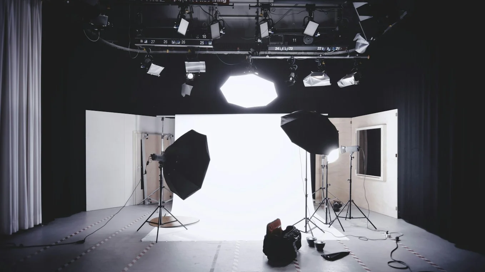
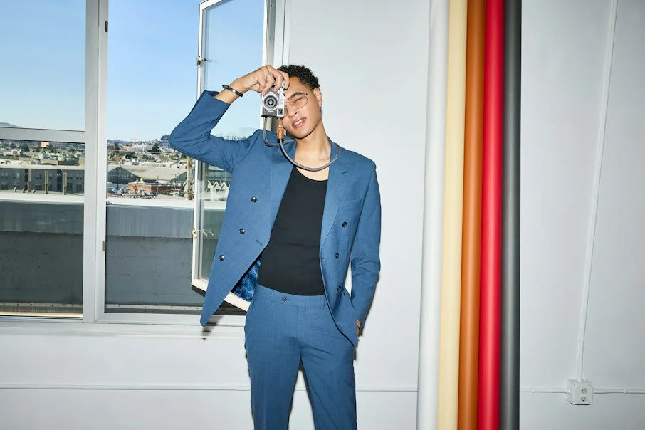
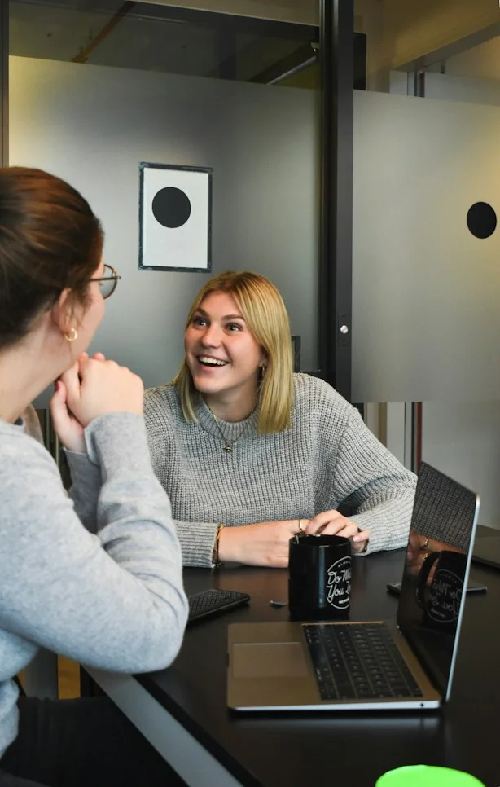
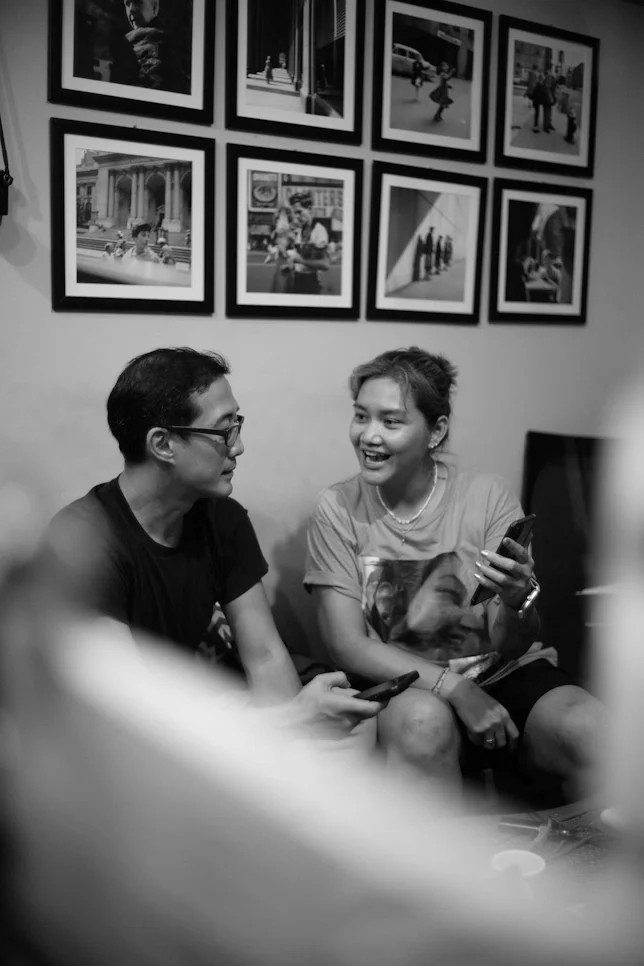
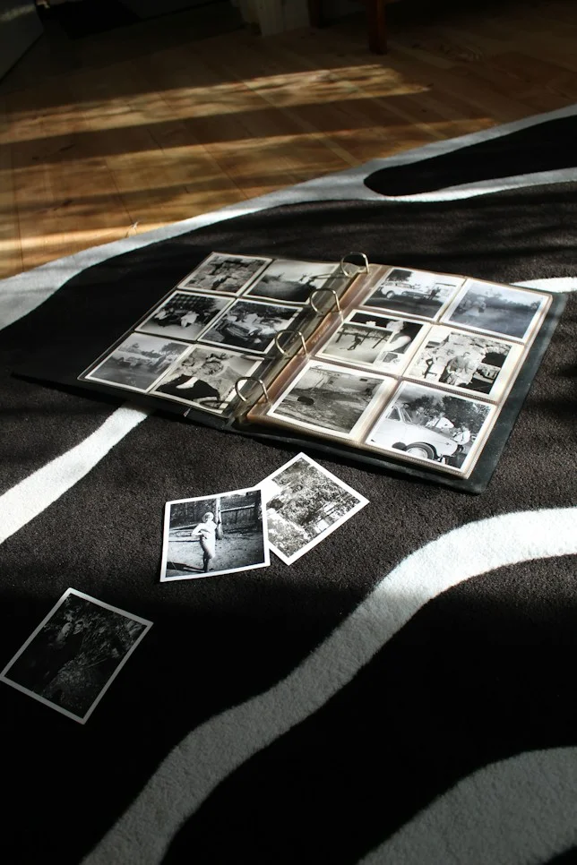
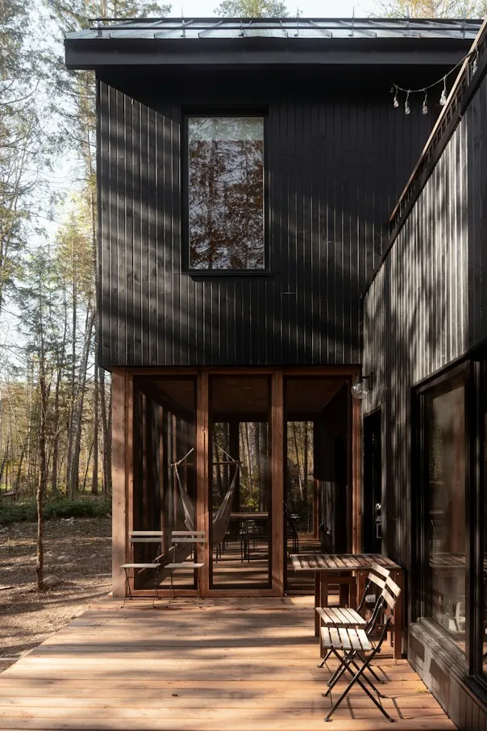

More than
photographs. A
way of seeing.
I’m a photographer drawn to honest moments, thoughtful details and the stories that connect people, places and brands.
Photography has
always been about
noticing.
Long before picking up a commissioned medium–format body, I was preoccupied with how sunlight fractures across raw limestone surfaces and how unscripted gestures reveal more than rehearsed postures. Photography did not begin for me as a technical obsession; it emerged as a discipline of sustained observation.
Over the past decade, that curiosity matured into a committed studio practice. Today, Atelier V focuses intently on the delicate intersections between architecture, high–craft fashion, human presence, and spatial tension.
In an era dominated by instantaneous, ephemeral imagery, our mandate is deliberate: we construct visuals that endure. We choose patience over velocity, structural clarity over trends, and organic nuance over synthetic post–processing.
Working hand–in–glove with creative directors, bespoke ateliers, and progressive brands, our aim remains constant: translating subtle identities into coherent, poetic visual languages.

Finding the
story in the
smallest
details.
Every photograph is a decision about what to preserve and what to let fade. We operate on three fundamental principles that shape every commission, whether an architectural survey or an international fashion campaign.
Observe
Pay quiet attention to natural rhythms, subtle human gestures, shifts in environmental light, and the emotional resonance of physical space before ever touching the shutter.
Connect
Understand the people, heritage, tactile materials, and core intent behind each assignment. Great imagery cannot be created in isolation from the subject’s true purpose.
Create
Synthesize those calibrated observations into thoughtful, disciplined photographs engineered to outlive fleeting algorithmic feeds and provide lasting cultural weight.
The work behind the final
frame.
A glimpse into the on-set preparation, technical rigor, and tactile production that define our commissions.

Different subjects. One point of view.
Good work starts
with a good
conversation.
We do not treat shoots as mere execution lists. Every engagement is a shared dialogue where technical precision serves your strategic intent. We dive deep into brand DNA, tactile nuances, and desired emotional cadence long before arriving on location.
Listen before creating
We align on core narratives, aesthetic constraints, and brand history before developing creative concepts.
Collaborate throughout the process
Real-time tethered proofing, open lines of critique, and responsive on-set adjustments with your creative team.
Deliver imagery with a clear purpose
Comprehensive file delivery optimized across print monographs, physical exhibitions, and digital channels.
A thoughtful
process, from first
idea to final image.
We view optical tools not as status symbols, but as precision instruments that unlock specific optical personalities. Whether deploying Hasselblad medium-format sensors for architectural scale, Leica glass for discreet documentary rhythm, or custom 4x5 large-format film for organic tactility—our gear is selected strictly in service of the concept.

The Copenhagen Studio
North-facing natural daylight pavilion with 5-meter ceilings.

The Optical Suite
Medium format digital backs, Leica prime glass, and large format 4x5 bodies.

Proofing & Curation
Archival pigment proofs and calibrated color certification before final release.
Inspiration doesn't stop at
the shoot.
Quiet fragments, solitary observations, and architectural walks that continually nourish our visual vocabulary.
Architecture & Spaces
Studying how silence and masonry intersect. The way a shadow changes weight as concrete ages through the seasons.

Travel & Landscapes
Slow train journeys across northern coastlines, observing the shifting horizon and unfiltered atmospheric moisture.
Books & Visual Culture
Collecting mid-century typography, Japanese ceramic journals, and rare monographs that remind us of tangible craft.
Good photographs are a collective effort.
“Working with Atelier V transformed how we articulate our spaces. Their instinct for natural light and patient observation delivered imagery that feels entirely timeless.”HELENE MØLLER — CREATIVE DIRECTOR, NORDIC SPACES MONOGRAPH
Let’s create
something
meaningful.
Whether you have a fully formed brief with locked shot lists or simply the spark of a creative narrative, I welcome the dialogue.
Bredgade 45, 1260 Copenhagen K
Rue de Turenne, 75003 Paris
Currently accepting commissions for
Q3/Q4 2025 across Europe and
Worldwide.